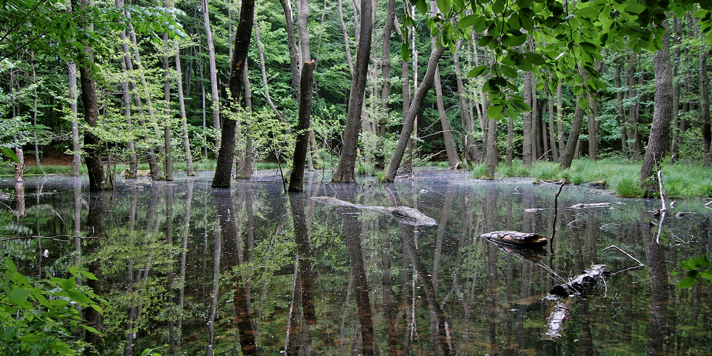

javascript before/after image slider gallery
based on Dev Ed's "Awesome Vanilla Javascript Image Slider!" utube tutorial
gallery.js will now handle unlimited number of sliders (.img-slider-container) on your page
color
bw

edited

raw

img2
img1